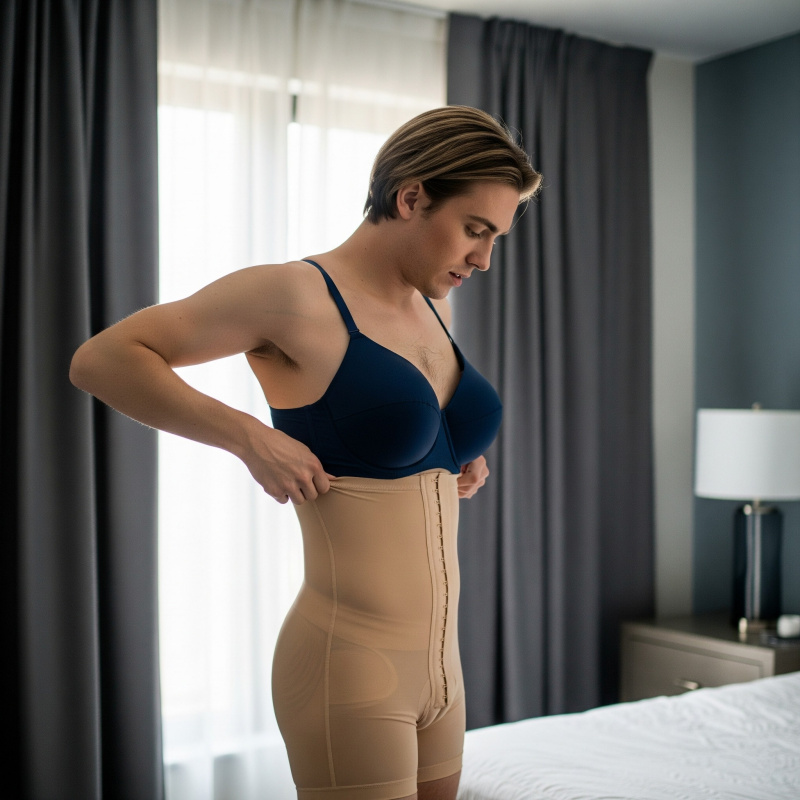

For three eternal seconds, Casey Parker stared at the strip of pink lace visible above my belt like she was watching a man juggle grenades. Not the calculated composure she brought to budget crises or media disasters—something rawer. More honest.
Then she came back to her senses, and I watched her mind work through the implications—not of what I'd done, but of what it meant for survival in the particular ecosystem of predators we called state government.
"You actually did it," she said, and I caught something that might have been admiration before her voice shifted back to strategist mode. Professional damage control for the professionally damaged. "Jesus, Evan."
"He wanted to see me humiliated," I said, adjusting my position in the chair. I was wearing the panties over my boxers and things were bunching in uncomfortable places. "It was like some kind of sick power play, just to watch me squirm. I was so fucking angry—there was no way I was going to let him win."
"So you 'won' by… doing exactly what he told you to?"
"It wasn't really about what he was asking. It was one of his games. He wanted me to back down from the argument or storm out, anything to prove I don't have the balls for real politics."
"And you weren't going to give him that."
"Only way to beat him was to do something he'd never expect. Take away his satisfaction." I paused, searching for the word to explain the logic that has been so clear in the heat of the moment. "It's like… he got what he asked for, but not what he wanted."
Casey studied me for a moment, those dark eyes tracking every detail with the intensity she brought to opposition research. This was what I'd always valued about her—the ability to absorb information without judgment, to see angles that everyone else missed. Even now, watching her process the most audacious thing I'd ever done, I felt that familiar surge of trust.
"He's going to fire me," I concluded.
"He won't."
"Then I'll resign."
"You can't."
As always, Casey was entirely right. On both counts. Beau couldn't fire me without risking that someone would leak the panties story—hell, I might do it myself. If word got out, the resulting scandal would sink his campaign for good.
As for me, quitting now would be professional suicide. The press would assume it was because we were eight points down in the polls, and Beau had lost confidence in me. That failure would follow me the rest of my career.
It was the ultimate zero sum game. Beau was trapped by information as dangerous to him as it was to me. Which should have made me feel better, but instead reminded me that we were now playing a game where mutually assured destruction was the only deterrent. The political equivalent of two men in a room full of gasoline, each holding matches.
"Look, you two have had arguments before," Casey continued. "Remember the budget fight? The transportation committee disaster? Things got heated, then you both moved on. Politicians have fragile egos but surprisingly short memories when it serves their interests."
I wanted to believe her. That this could somehow blow over, that we could return to normal political warfare and pretend none of this had happened. That I could go back to being the competent Chief of Staff who cleaned up other people's messes instead of creating spectacular ones of my own.
"I hope you're right," I sighed. I loosened my tie, trying to ignore how the panties were riding up uncomfortably - a constant reminder that they weren't intended to be pulled on hastily over boxer shorts. "But this time felt different. Can you believe he called me an embarrassment to the administration? Me. A fucking embarrassment."
"I'm sure he didn't mean it."
"To hell with what he meant. If he thinks I'm an embarrassment to this administration," I said slowly, "maybe I should show him what real embarrassment looks like."
Casey raised an eyebrow. "What does that even mean?"
"I don't even know. Probably nothing. I'm just letting off steam."
Casey leaned back in her chair, and I caught the hint of a smile. "Well, if you really wanted to horrify him, you could always show up to work tomorrow in a dress and heels."
I laughed despite everything. "Right. That would definitely get his attention."
"We should probably get back to work," Casey said, turning back to her laptop. "Let things settle down, see how this plays out."
I nodded, already thinking about how to salvage what was left of a completely fucked day.
Back in my office, I locked the door and took off my pants at work for the second time that morning. The pink lace came off in one swift motion. I wadded the panties into a ball and shoved them into my desk drawer, slamming it shut like I was sealing away evidence of temporary insanity.
The rest of the morning passed in a haze of normal political crisis management. Casey handled the immediate fallout from my confrontation with Beau while I tried to focus on the routine business of governing. Budget reviews, policy briefings, the endless parade of decisions that kept the state machinery functioning.
But I could feel the change in the building's atmosphere like a barometric shift before a storm.
It started small. Derek Holt appeared in my doorway around noon to talk about a draft I'd been expecting since yesterday.
"Sorry for the delay, had to run it by the Governor," he said without preamble. No explanation, no request for permission. Just information about a decision he'd already made.
"Next time, run it by me first," I said. "Same as always."
"Actually, he wanted to see it fresh. You know, without..." Derek gestured vaguely, like my input had become contamination. "But I copied you on the final version."
Copied me. On my own staff's work product.
An hour later, Janet Weiss canceled our budget meeting without consulting me first. "I was able to get the answers I needed directly from the Governor," she said. "Didn't want to bother you."
By three o'clock, Kevin Morrison was routing legislative strategy through Casey instead of me. Even my assistant started asking Casey for approval on my calendar changes.
They weren't treating me like I was fragile. They were treating me like I was irrelevant. Like I was a dead man walking.
The realization was slow to arrive, but when it did it was unmistakable. Seven years of building relationships, establishing authority, earning respect—it was all evaporating because a group of political operatives had witnessed what they interpreted as my professional humiliation.
These people weren't just colleagues; they were my team. I'd hired most of them, mentored them, fought for their raises and promotions. But politics was war, and they'd apparently decided I was on the losing side.
By five o'clock, most of the senior staff had found excuses to leave early. The executive wing felt like a tomb, quiet except for the hum of fluorescent lights and the distant sound of custodial staff beginning their evening rounds.
I was reviewing budget projections when our headache of a Press Secretary, Tommy Danielson, knocked on my door.
Tommy. The twenty-six-year-old political neophyte whose father had donated enough money to buy his son a job he was spectacularly unqualified for. Nepotism wrapped in a fancy diploma. The exact kind of hire that made democracy feel like a joke told by rich people.
In the two months since we'd given him a taxpayer-funded job, Tommy had managed to bungle three press conferences, miss two major story deadlines, and exhibit the general incompetence that made the entire administration look amateurish. I'd been looking for an excuse to fire his worthless ass for weeks. But today was decidedly not the day I needed additional complications.
"Hey Boss," he said, strolling into my office without waiting for permission—a breach of protocol that would have been unthinkable this morning. He carried a manila folder and wore the slightly smug expression of someone who thought he'd identified weakness in a superior.
"What do you need, Tommy?"
"About this education funding statement—I think we need to reframe the narrative." He slid a draft across my desk with the confidence that came of never being told your ideas were terrible.
I glanced at it. The legislature had cut education funding by twelve percent, but we were getting blamed for it. Tommy's proposed statement claimed we were "increasing our investment in educational excellence through strategic resource optimization."
Orwellian bullshit designed to hide the fact that we were firing teachers.
I stared at him. Really stared. The kind of look you give someone when you're trying to determine if they're stupid or just fucking with you.
"This is garbage, Tommy."
His practiced smile faltered slightly. "I prefer to think of it as creative messaging."
"You want to tell parents we're 'optimizing resources' while their kids sit in overcrowded classrooms?"
"The polling shows that 'investment' language tests better than 'spending' language with our base—"
"Our base isn't stupid, Tommy. They can count." I dropped the statement onto my desk like it was contaminated. "Draft something that isn't obvious bullshit. Legislature made difficult budget choices to avoid raising taxes. Some programs were reduced. We'll work to restore funding when revenues improve."
Tommy's smile disappeared entirely. "That's not exactly the message the Governor wants—"
"The Governor hired me to run this staff. Of which you are a part."
"Right, but given the, uh, situation this morning..." Tommy's voice carried the particular tone of someone delivering bad news to their senile grandparent.
Wait. Tommy hadn't been in the room during my confrontation with Beau. Yet somehow he knew about "the situation."
"What situation?" I asked, my voice dropping to the register that usually made staffers nervous.
Tommy shifted uncomfortably, but his smirk returned. The fucker was enjoying this. "Look, Boss, everyone's talking about what happened. People are concerned."
"Everyone's talking." The story was spreading through the building like wildfire, getting embellished with each retelling. By tomorrow, every legislative aide would know. By next week, I'd be a punchline in Politico.
"Concerned how?" I asked.
"I don't know. Just... maybe you should look over the background materials first? I know you've had a stressful day—"
"A stressful day?" My voice rose despite my efforts to stay calm. "You think I can't do my job because I've had a stressful day?"
"No, I just meant... after whatever happened with the Governor..." Tommy trailed off, realizing he was venturing into dangerous territory. Finally, a survival instinct. Too bad it was arriving about six minutes too late.
But I was already past the point of caring about dangerous territory.
"What exactly do you think happened with the Governor, Tommy?"
"I don't... I mean, I wasn't..." Tommy's face flushed the particular shade of red that rich kids turn when they realize daddy's money might need to save them. Again. "Look, everyone's just a little on edge today. No need to get emotional about—"
"Emotional?"
"I didn't mean it like that. It's just, you know..." Tommy gave me what he probably thought was a knowing look. The kind of expression that said "we're all boys here, we understand how these things work."
And then he said it.
"Must be that time of the month, right?"
For the second time in a day, something snapped loose inside me.
"Did you just make a period joke about your boss?" My voice was deadly quiet. The kind of calm that comes right before heads start rolling.
"I... no, I was just... it was just a joke, man. I didn't mean anything by it." Tommy's voice cracked like he was going through puberty again. "You know how it is."
Actually, I didn't know "how it was." I didn't know how a grown man could be so fucking stupid that he'd make menstruation jokes about his superior while standing in that superior's office. But Tommy was apparently pioneering new frontiers in professional suicide.
"You made a joke about me having my period. In my office. About the Chief of Staff of this administration."
Tommy's face was now completely white. Good. Fear was appropriate here.
"Wait, I'm sorry, I was just trying to lighten the mood—"
"Clean out your desk," I said. "You're fired."
The words came out before I'd fully processed them, but once they were spoken, I felt a surge of savage satisfaction. The kind of pure, undiluted pleasure that comes from finally wielding power against someone who deserves it.
Was it rash? Sure. Would I have done it if I hadn't just spent an afternoon of feeling like a victim, of being powerless in my own position of power? I'll never know. But in that moment, I relished the chance to finally remind everyone—including myself—that I still had teeth.
"Jesus, Evan, I was just—"
"'Evan'? What happened to 'Boss'?" I mocked, my voice rising. "And what you were 'just' doing was demonstrating why this administration has a zero-tolerance policy for workplace harassment."
Tommy's face cycled through confusion, panic, and outrage in rapid succession. "You can't fire me for a joke—"
"I'm firing you for a pattern of incompetence culminating in insubordination. The joke was just the final confirmation of your unsuitability for this position."
"This is insane!" Tommy's voice cracked with indignation. The kid had clearly never been fired before. "You're having some kind of breakdown and taking it out on—"
"Get out," I interrupted. "Security will escort you if necessary."
He stared at me for a moment, perhaps finally recognizing that he'd crossed a line. But this was Tommy, so probably not. After a beat, he gathered his pathetic folder and stalked toward the door.
"This isn't over," he said.
"Yes," I replied. "It is."
The door slammed behind him hard enough to rattle the windows.
I sat alone in my office for several minutes, listening to my heart pound against my ribs. The adrenaline was wearing off, replaced by a cold understanding of what I'd just done.
I'd fired the Press Secretary. Over a period joke. Three weeks before the legislative session.
But more than that, I'd just gotten a preview of my future. This was what my life looked like now—casual gender-based mockery from my own staff. Tommy Danielson, incompetent nepotism hire though he was, had felt comfortable enough to make period jokes about me because Beau had opened that door. Had shown everyone that gendered attacks on the Chief of Staff were not just acceptable but encouraged.
How long before everyone in this building was making the same jokes? How long before I became the Chief of Staff who couldn't handle a little ribbing about my masculinity? How long before even the janitors were whispering about my emotional state and whether I needed a tampon?
A knock on my door interrupted my spiral into professional despair.
"Come in."
Casey appeared, looking concerned in her carefully modulated way. The expression that said I'm here to help while simultaneously calculating the damage.
"I just heard about Tommy. What happened?"
"He made a period joke," I said flatly. "So I fired him."
Casey closed the door and sat down across from me. "He was already on thin ice anyway."
"That's not the point." I rubbed my temples, feeling a headache building behind my eyes like storm clouds gathering. "The point is that he felt comfortable making that joke in the first place. Beau opened the door, and now everyone thinks it's open season on the Chief of Staff's masculinity."
"Everyone's talking," I continued. "The whole building knows about this morning. And they think I lost."
Casey was quiet for a moment, her political mind working through the implications.
"You need to do something," she said finally. "Something that shows you're completely in control of the situation. That whatever Beau threw at you, you can handle it without breaking stride."
"Like what?"
"I don't know yet," Casey replied. "What would your father do in this situation?"
The mention of my father sent that familiar stab of inadequacy through my chest. Casey didn't know it, but her question was the exact one I had asked myself every day since entering politics. What would the great James Cross have done? Could I ever hope to measure up?
"Dad always said the worst thing you can do is let them control the narrative," I said slowly. "When someone tries to humiliate you, you don't give them the satisfaction of seeing it work."
"Right. Get ahead of it somehow," Casey said thoughtfully. "Own the story before they can use it against you."
"You get ahead of it," I echoed, an idea crystallizing like a chemical reaction. "Defuse their attack by embracing it."
Casey's eyebrows rose slightly. "That's... interesting."
The answer flashed into my mind like lightning. Audacious, insane, but exactly the kind of move that would show everyone their gender-based attacks were meaningless.
"Casey," I said, remembering her throwaway joke earlier that morning. "You said something earlier about showing up in a dress and heels."
Casey blinked. "That was just—"
"No, think about it. Beau thinks I'm an embarrassment? The staff thinks I'm a joke? What if I actually lean into it? Own the narrative completely?"
"You're serious."
"Dead serious. Show up tomorrow looking completely professional, completely feminine, and watch them all lose their minds trying to figure out how to react."
The pieces clicked together rapidly. It seemed so perfect that my two problems might have one solution. What if I could reclaim my authority but also teach Beau a lesson at the same time?
"Wait, this could work," I said, the strategy forming as I spoke. "Beau thinks I'm an embarrassment to the administration? Why don't we show him real embarrassment?"
Casey still didn't seem convinced. "How exactly does this play out?"
My smile widened, becoming something predatory. "Beau will be mortified. His Chief of Staff walking around in a dress, he won't know how to react without making himself look like either a monster or an idiot. He'll fold by lunch. No way he tolerates me calling his bluff. He'll apologize and we'll all move on."
Casey stared at me for a long moment, and I watched her political mind work through every possible angle and consequence.
"Evan, that's..." She paused, and for the first time since I'd known her, Casey Parker looked genuinely uncertain. "That's either completely insane or absolutely brilliant."
"My father's best moves were usually both."
"But the risks—" She stopped, seeming to calculate something complex.
The doubt in her voice almost made me reconsider. Almost.
"Sure. But doing nothing guarantees I become the administration's official punchline," I said. "At least this way I control the narrative."
Casey was quiet for another moment. Then something shifted in her expression—a kind of resolve that I'd seen during our toughest campaigns.
"Your father would be proud," she said finally. "This is exactly the kind of bold move he was famous for."
"So you'll help?"
"I'll help. But we do this right—professionally, convincingly, or not at all."
"Do you know anyone who could..." I paused, realizing how strange the request sounded even in my own head. "Anyone who could make this work?"
"Actually, I might. I have an ex who works in television. Makeup artist, studied theatrical design. If anyone can make you look completely professional and convincing, it will be Alex."
An ex. I felt a brief stab of something that might have been jealousy—not because I had any claim on Casey's romantic life, but because our own brief encounters had left me wanting more than she'd been willing to give.
"Would he be willing to help with something this unusual?"
"Probably. We ended things amicably, and Alex has always been interested in challenging projects." Casey pulled out her phone. "Let me text and see if we can arrange something."
Her fingers moved quickly across the screen. Within minutes, her phone buzzed with a response.
"Alex says yes," she said, looking up with a small smile that didn't quite reach her eyes. "Tomorrow morning, six AM at my place."
"That's it? Just like that?"
"That's it." Casey's expression was thoughtful, calculating. "But there are things you'll need to handle tonight. Preparation work that we can build on tomorrow."
A flicker of doubt crept in—was I really going to do this? But then I thought about Tommy's casual cruelty, about the jokes that would multiply like cancer, about becoming the punchline in my own administration. About seven years of competent service being reduced to period jokes and emotional woman stereotypes.
Fuck that. And fuck all of them.
"What kind of preparation?"
"Body hair, for one. That needs to be completely gone if this is going to be convincing." Casey's voice was matter-of-fact, like we were discussing polling data instead of my complete physical transformation. "There's a pharmacy on Fifth Street that stays open late. You'll need depilatory cream—the industrial stuff, not the gentle bullshit they market to suburban housewives."
Commitment and terror wrestled in my chest like fighting cats. But every time doubt surfaced, I thought about the mockery spreading through my own building, and anger burned the hesitation away like acid.
"Ugh, fine. See you tomorrow."
"Six AM sharp. And Evan? We'll fix things. I've got your back."
After she left, I sat alone as the January sky darkened outside my windows. Tomorrow, I was going to show everyone in this building what happened when they underestimated Evan Cross. I didn't know exactly what that would look like yet, but I knew it was going to be unforgettable.
The question was whether it would be unforgettable in the way I intended.
Twelve hours later, standing outside Casey's apartment in the predawn cold, I was no closer to an answer.
Casey lived in a renovated brownstone in the old city district, the kind of neighborhood where ambitious young professionals convinced themselves they were living authentically while paying triple the rent. I arrived at 5:57 AM, three minutes early as always, my breath coming out in small clouds that dissipated in the morning air like my former life apparently had.
My deputy answered the door in leggings and a Georgetown sweatshirt, looking more relaxed than I'd seen her in months. Without the professional armor of tailored suits and strategic makeup, she seemed younger. More like the ambitious campaign coordinator I'd first hired than the deputy chief of staff who now ran half my operation.
"Coffee's ready," she said, stepping aside. "How did the preparation go?"
I thought back to last night's ordeal. The cream had spread like industrial paint, covering arm and leg hair I'd never thought about until now. The smell had been sharp and chemical, designed to break down protein structures. Chemistry as violence.
When the timer had gone off, I'd stepped into the shower and watched an adult lifetime of masculine body hair wash away in sheets. The water ran cloudy with dissolved keratin, carrying away texture and roughness that had defined my physical presence since college. Like molting. Like being reborn as something else entirely.
After drying off, I'd barely recognized my own body. Smooth skin where rough patches had existed. Clean lines instead of the casual masculine coverage I'd never questioned until it was gone.
I looked up at Casey, holding out my arms to show smooth skin where hair had been yesterday. The exposed surfaces felt strange in the morning air, hyperaware of every temperature change. Evidence of either audacious strategy or complete psychological collapse. Time would tell which.
"Perfect. Alex dropped off some materials last night—foundation pieces that'll help create the right proportions." Casey gestured toward her bedroom. "You should put them on while it's still just the two of us. More privacy."
She led me to her bedroom where a shopping bag sat on the dresser. Inside I found what looked like a theatrical costume department's idea of femininity: padded shorts with foam inserts at the hips and butt, a padded bra, and compression garments that looked designed to reshape human anatomy through uncomfortable sustained pressure.
"I'll be in the kitchen when you're ready."
Alone in her bathroom, I faced down these foundations of false femininity and wondered when my life had become a revenge fantasy directed by someone with a theater degree. I reassured myself that my father would have understood the logic, even if he'd questioned the method.
I started with the padded shorts. Foam inserts at the hips and butt that would create curves I'd never possessed, transforming my silhouette into something unmistakably feminine.
The padded bra went on next. Soft foam cups that created an ample, undeniably feminine bust line. As I struggled to fasten it, I realized that today my chest would be the first thing people noticed about me whenever I entered a room.
Finally, the body shaper—essentially professional-grade Spanx designed to smooth and compress everything into feminine lines. The control garment pulled tight around my waist and torso, creating an hourglass silhouette while smoothing any masculine angles the padding hadn't addressed.
{kind=link}

Looking in Casey's full-length mirror, I saw a stranger with distinctly feminine curves where masculine angles had existed an hour before. I wasn't going to be anyone's idea of a centerfold—my shoulders were still too broad, my waist too thick—but my figure was undeniably a woman's.
"How's it going?" Casey called from the kitchen.
"Surreal," I replied. I wrapped her robe around my new figure and emerged, conscious of how the padding changed everything—walking, sitting, the way fabric fell across my transformed body.
Casey was setting up what looked like a mobile command center when I appeared. She looked up and something shifted in her expression, like she was seeing me as someone new.
"Alex should be here any minute," she said, checking her phone. "You look great."
"I feel like I'm about to jump out of an airplane without being entirely sure the parachute will work."
"Your father would be proud," she said.
I hoped so. James Cross had built his reputation on the unexpected, on turning conventional wisdom inside out when circumstances demanded creativity. But this was beyond anything he'd ever attempted—or needed to attempt.
My thoughts were interrupted by a knock at the door.
"That's Alex," Casey said, standing. She opened the door to reveal a slender figure with short blue hair cropped close to the skull and multiple ear piercings, carrying what looked like a tackle box designed by surgeons. Alex wore black jeans and a plain gray t-shirt with worn leather boots. Makeup was exquisite—flawless foundation creating porcelain skin, precisely applied winged eyeliner, and subtle contouring that suggested both artistry and daily practice.
"Alex Kim," Casey said, "meet Evan Cross, my boss I told you about. Evan, Alex is going to help us solve your problem. They're a genius."
"They," I thought as Alex moved into the apartment with fluid grace that didn't fit any gender classification I'd unthinkingly assigned to Casey's "ex." They set down the case and extended a hand.
"Nice to meet you, Evan." Alex's voice was pitched neutral, carefully trained to avoid gender markers.
I shook the offered hand, realizing that every assumption I'd made about Casey's romantic history had been wrong. Alex obliterated every assumption I'd made about gender, sexuality, and what Casey found attractive. Apparently I knew nothing.
Is this the type of person Casey normally dated? If so, what had she ever seen in me? And what else didn't I know about Casey Parker?
Alex opened their tackle box, revealing an array of brushes, bottles, and tools that looked like they belonged in an operating room or a high-end funeral parlor.
"Casey says you need to look completely professional," Alex said, surveying me with the clinical assessment of someone solving a technical problem. "Nothing theatrical, nothing that screams costume. Just a successful woman who happens to work in politics."
"And you can do that?"
"I can make you unrecognizable," Alex said simply. "The question is whether you're ready to commit completely."
I thought about Tommy's period joke. About the mockery that was spreading through my own staff like a virus. About Beau sitting in his office, probably thinking he'd finally put me in my place.
I looked at Casey, who had settled into a chair across from us, laptop open, probably handling the morning's crisis management while watching my transformation. Watching her respond to emails while I struggled with fake breasts felt like peak absurdity. But then she glanced up at me, and a small, reassuring smile spread across her face.
"I'm ready," I confirmed.
Alex nodded and pulled a pair of tweezers from their case. The metal caught the morning light like tiny scalpels.
"Excellent," they said, approaching my eyebrows with professional focus. "This is going to be fun."